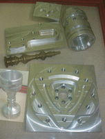

 El objetivo principal del uso del CNC es la eficiencia y productividad. En este
sentido el CNC resuelve numerosos problemas pero no es remedio para
toda la problemática de mecanizado por arranque de viruta.
{kind=link}
Las ventajas
del CNC son:
- Eficiencia: Ya que el operador de maquina CNC no mecaniza las piezas, realiza la puesta a punto de la máquina y controla la medidas criticas por si es necesario algún ajuste.
- Precisión: La maquina dotada de CNC, con el reglaje adecuado tiene mayor precisión y la repetitividad de mecanizado es mucho mayor.
- Productividad: Debido a la optimización del proceso de corte que tienen las máquinas CNC la cantidad de material que se mecaniza es mayor.
- Posibilidad de fabricación de piezas imposibles o muy difíciles. Gracias al control numérico se han podido obtener piezas muy complicadas como las superficies tridimensionales necesarias en la fabricación de aviones.
- Aumento de productividad de las máquinas. Esto se debe a la disminución del tiempo total de mecanización, en virtud de la disminución de los tiempos de desplazamiento en vacío y de la rapidez de los posicionamientos que suministran los sistemas electrónicos de control.
- Permite simular el proceso de corte a fin de verificar que este sea correcto.
- Versatilidad del mecanizado con tornos y fresadoras CNC.
La versatilidad se consigue porque el control puede almacenar programas–pieza de muy diferentes geometrías.
El control CNC facilita operaciones como:
- Modificar programas almacenados en el control.
- Cambio rápido de producir una pieza a otra.
- El operario controla todos los parámetros de mecanizado mediante el panel y la pantalla del CNC.
Las desventajas del CNC son:
- Alto costo de la maquinaria.
- Falta de opciones o alternativas en caso de errores.
- La planificación del trabajo debe ser más detallada y rigurosa.
- La inversión por puesto de trabajo es elevada.
- Es necesario mantener un gran volumen de producción a fin de lograr una mayor eficiencia.
- Necesidad de realizar un programa de mecanizado de la primera pieza.
- Costo elevado de las herramientas y accesorios.